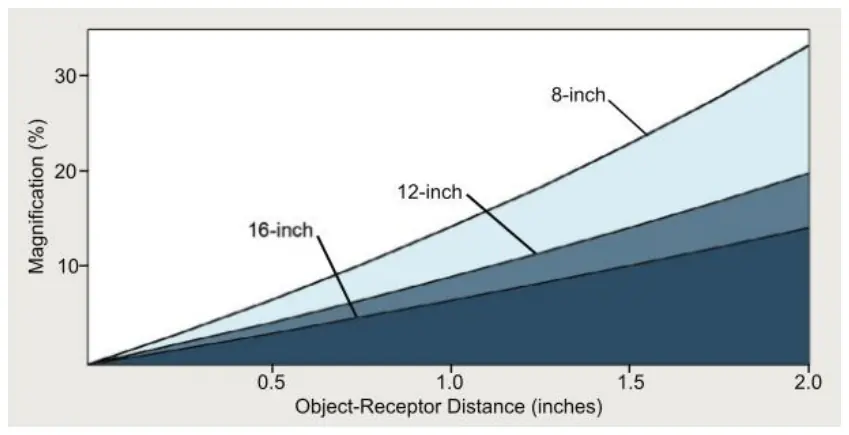

نسخه استخراجشده؛ ترجمه یا تأیید علمی انجام نشده است. وضعیت: captured
پنج اصل هندسهی آرمانی را هر بار مرور کن: گیرنده موازی با محور بلند دندان، پرتو مرکزی عمود بر هر دو، فاصلهی جسم تا گیرنده کمینه، فاصلهی منبع تا جسم بیشینه، نقطهی کانونی کوچک.

و هر خطای هندسی، امضای خودش را روی تصویر میگذارد: کوتاهشدگی و کشیدگی از زاویهی عمودی نادرست، همپوشانی پروگزیمال از زاویهی افقی نادرست، مخروطبری از تراز نادرست پرتو با گیرنده.
و اکنون این را با ماژول ۸ پیوند بزن: همان نقطهی کانونی و همان دو فاصله که در هندسهی پریاپیکال دیدی، دقیقاً همانهایی هستند که در درس گیرندهها تفکیک فضایی بالینی را تعیین میکردند. هندسهی خوب، تیزی میسازد؛ و هیچ گیرندهای هندسهی بد را جبران نمیکند.
سه خانوادهی خطا را از هم جدا نگه دار: خطای جایگذاری قدامی-خلفی (باریک یا پهن شدن دندانهای قدامی)، خطای تراز عمودی و شیب (خط اکلوزال خندان یا اخمکرده)، خطای چرخش (عدم تقارن راست و چپ).
و تصاویر شبح و مضاعف را با یک قاعدهی واحد بشناس: هر جسم متراکمی که میان منبع و مرکز چرخش بیفتد، سایهای بزرگتر، مبهمتر و بالاتر در سمت مقابل میسازد. همین یک جمله، بیشتر آرتیفکتهای گیجکنندهی پانورامیک را توضیح میدهد.
و یک محدودیت ذاتی را هم به یاد داشته باش: تفکیک پانورامیک را حرکت مکانیکی دستگاه به حدود ۵ جفتخط بر میلیمتر محدود میکند؛ پس گیرندهی بهتر، پانورامیک را تیزتر نمیکند.
و اکنون منطق انتخاب مودالیته را در یک زنجیره بچین:
و آرتیفکتهای CBCT را با علتشان جفت کن: سخت شدن پرتو و پاشش فلزی از حضور اجسام پرچگالی، حلقهای از کالیبراسیون آشکارساز، حرکتی از بیمار، نویز از پرتوگیری ناکافی. و همینجا ببین که سخت شدن پرتو همان پدیدهای است که در فیزیک تضعیف خواندی.
نوع سؤال: ساخت کلمه · 7 خانه
حروف منبع: ت · ک · ا · ن · س · ت · ر